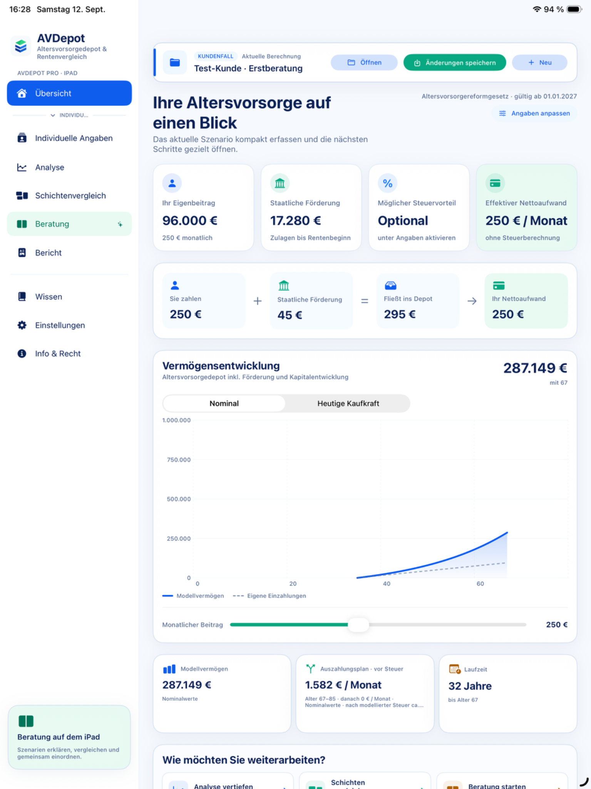
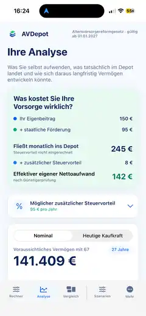
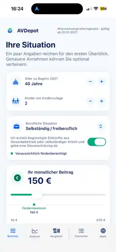
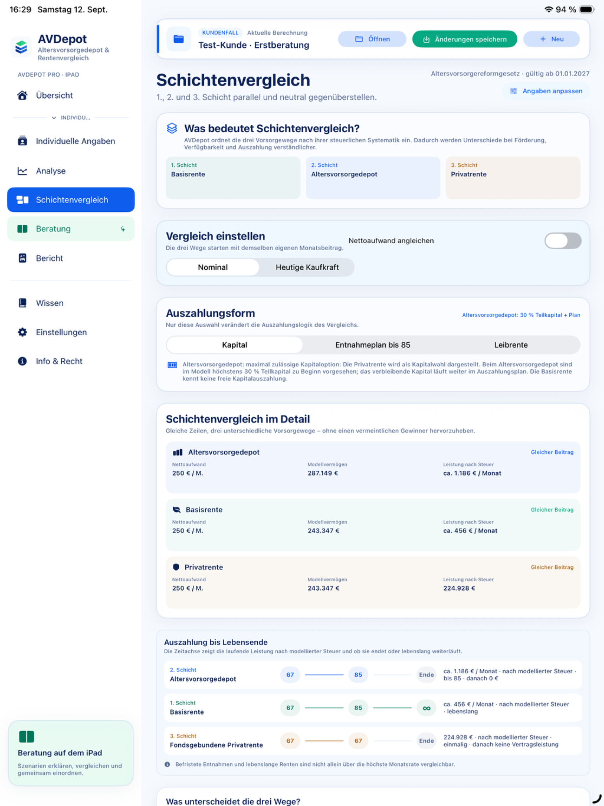

Verstehen, was wirkt.
Eigenbeitrag, mögliche Förderung und Steuerwirkung zusammen betrachten. Damit Sie Ihren tatsächlichen Aufwand besser einordnen können.
GUTE ENTSCHEIDUNGEN BEGINNEN MIT KLARHEIT
Verstehen, was heute möglich ist. Erkennen, was morgen daraus werden kann. AVDepot macht Altersvorsorge vergleichbar – auf Ihrem iPhone und iPad.
Basic kostenlos · Pro einmalig freischalten


FÜR IHRE PERSÖNLICHE VORSORGE
Was kostet mich meine Vorsorge tatsächlich? Welche Möglichkeiten passen zu mir? Machen Sie die Unterschiede sichtbar.
Eigenbeitrag, mögliche Förderung und Steuerwirkung zusammen betrachten. Damit Sie Ihren tatsächlichen Aufwand besser einordnen können.
Altersvorsorgedepot, Basisrente und fondsgebundene Privatrente gegenüberstellen – von der Ansparphase bis zur Auszahlung.
Mit Pro Beiträge und Annahmen variieren, die Versorgungslücke betrachten und Ergebnisse als PDF-Bericht festhalten.

SO FÜHLT SICH ÜBERBLICK AN
Die wichtigsten Zusammenhänge immer dabei. Entdecken Sie AVDepot direkt aus der App.
Rechner · Schritt für Schritt zur persönlichen Modellrechnung.
MEHR RAUM MIT AVDEPOT PRO
Auf dem iPhone schnell orientieren. Auf dem iPad Zusammenhänge vertiefen: mehr Platz für Vergleiche, Szenarien und verständliche Gespräche über Vorsorge.

FÜR PROFESSIONELLE BERATER
DEMNÄCHST VERFÜGBARGewinnen Sie Leads und Beratungsanfragen direkt über die App. AVDepot Consultant soll Interessenten den direkten Weg zu Ihrer Beratung eröffnen – und Sie anschließend vom ersten Gespräch bis zum individuellen Bericht begleiten.
Consultant entdecken ↓Der zentrale Vorteil der kommenden Consultant-Edition: Interessenten sollen direkt aus AVDepot eine Beratung bei Ihnen anfragen können. So wird die App zum Zugang für neue Beratungskontakte – genau dort, wo Menschen sich mit ihrer Altersvorsorge beschäftigen.
Leads generieren. Beratungsgespräche anbahnen.Berechnungen, Varianten und Notizen einem Kundenfall zuordnen. So bleibt der individuelle Beratungsstand im Zusammenhang.
Analyse, Vergleich und Empfehlung frei einsetzen. Module gezielt öffnen und Varianten nachvollziehbar präsentieren.
Unternehmensprofil, Logo und Kontaktdaten einbinden. Berichtsbausteine auswählen und nächste Schritte dokumentieren.
Von der Beratungsanfrage aus der App
zum persönlichen Vorsorgegespräch.
Vorschau auf die kommende Edition. Funktionsumfang, Preis und Veröffentlichungstermin werden zum Start bestätigt.
FÜR DEN EINSTIEG. FÜR MEHR TIEFE. FÜR IHRE BERATUNG.
Beginnen Sie kostenfrei. Erweitern Sie AVDepot, wenn Sie mehr brauchen.
VERSTEHEN & VERGLEICHEN
Der klare Einstieg in Ihre persönliche Vorsorgeplanung.
VERTIEFEN & PLANEN
Mehr Möglichkeiten für Ihre individuellen Fragen.
PROFESSIONELL BERATEN BALD
Neue Leads direkt aus der App. Ihr Arbeitsplatz für die anschließende Beratung.
Basic und Pro erhalten Sie über den App Store. Maßgeblich ist der dort angezeigte Preis. Consultant ist noch nicht verfügbar.
DIE UNTERSCHIEDE AUF EINEN BLICK
Was ist bereits enthalten? Was bietet Pro zusätzlich? Hier finden Sie alle Details.
| Funktion | Basic | Pro |
|---|---|---|
| Altersvorsorgedepot-Rechner | ✓ | ✓ |
| Vermögensanalyse | ✓ | ✓ |
| Drei-Wege-Vergleich | ✓ | ✓ |
| Nominale Darstellung | ✓ | ✓ |
| Heutige Kaufkraft | – | ✓ |
| Persönliche Rentenlücke | – | ✓ |
| Individuelle Szenarien | – | ✓ |
| Gleicher Nettoaufwand | – | ✓ |
| Rendite & Kosten | Standard | individuell |
| Rentenfaktoren & Auszahlung | Standard | individuell |
| Steueranalyse | Basis | erweitert |
| PDF-Bericht | – | ✓ |
| iPad-Beratungsansicht | – | ✓ |
| Preis | 0 €kostenlos | 14,99 €einmalig |
✓ enthalten · – nicht enthalten. AVDepot Pro wird einmalig freigeschaltet – ohne Abonnement.
Pro erweitert die persönliche Planung um detaillierte Szenarien, PDF-Berichte und die iPad-Beratung. Der zentrale Mehrwert von Consultant ist die geplante Generierung von Leads und Beratungsanfragen direkt über die App. Dazu kommt ein eigener Arbeitsplatz für professionelle Berater – mit kundenbezogenen Beratungsständen, frei nutzbaren Modulen und Berichten mit Unternehmensprofil. Pro ist ein Einmalkauf; für Consultant ist ein monatliches Abonnement geplant.
Ja. AVDepot Basic ist kostenlos und enthält den Rechner, den Vergleich der drei Vorsorgewege und zentrale Grundanalysen. Pro können Sie bei Bedarf in der App einmalig freischalten.
AVDepot Consultant ist in Vorbereitung und soll demnächst verfügbar sein. Ein verbindlicher Veröffentlichungstermin steht noch nicht fest. Der voraussichtliche Preis beträgt 89,99 € pro Monat.
Nein. AVDepot arbeitet mit Modellrechnungen und den gewählten Annahmen. Tatsächliche Entwicklungen können abweichen. Die App ersetzt keine individuelle Beratung und erbringt selbst keine Steuer- oder Rechtsberatung.
DER ERSTE SCHRITT IST EIN KLARER BLICK.